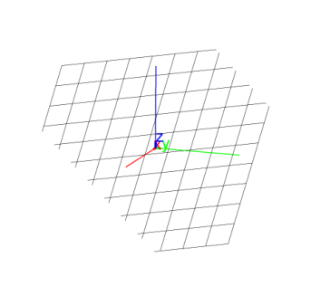

14.6.1 Planes in space: plane
The plane command draws and returns a plane. It can take its
arguments in different ways.
-
plane can take three arguments:
P,Q,R, three points.
- plane(P,Q,R) returns and draws the plane through
P,Q and R.
-
plane can take two arguments:
- plane(P,L) returns and draws the plane through
P and L.
-
plane can take one argument:
eqn, the equation of a plane.
- plane(eqn) returns and draws the
plane with the given equation.
Example
Input:
plane(point(0,0,5),point(0,5,0),point(0,0,5))
or:
plane(point(0,0,5),line(point(0,5,0),point(0,0,5)))
or:
plane(x + y + z = 5)
Output:
